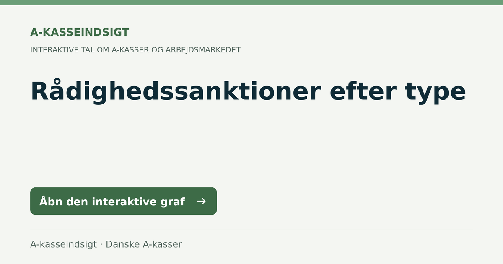

A-kasseindsigt · Danske A-kasser
Rådighedssanktioner efter type
Se rådighedssanktionernes fordeling på sanktionstyper i den seneste opgørelse.
Åbn grafen i A-kasseindsigt
A-kasseindsigt · Danske A-kasser
Se rådighedssanktionernes fordeling på sanktionstyper i den seneste opgørelse.
Åbn grafen i A-kasseindsigt